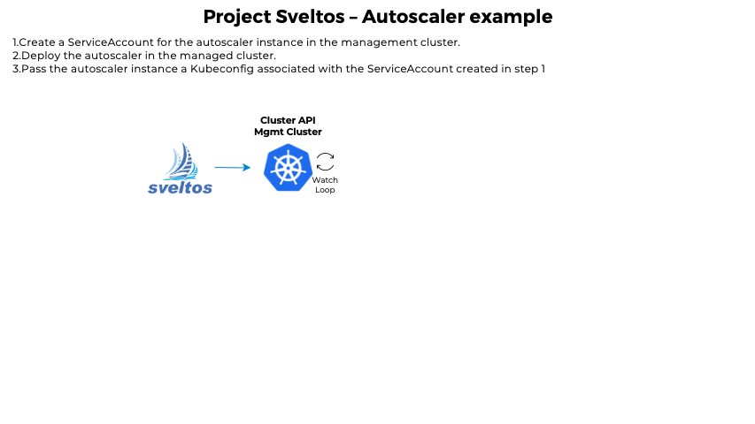

Helm Charts and Resource Templates - Examples
Template Generic Examples
This section is designed to help users get started with the Sveltos template feature. It provides simple, easy-to-follow examples. Let's dive in!
Example - Calico CNI Deployment
Imagine we want to set up Calico CNI on several CAPI powered clusters, automatically fetching Pod CIDRs from each cluster. Sveltos ClusterProfile definition lets you create a configuration with these details, and it will automatically deploy Calico to all matching clusters.
In the example below, we use the Sveltos cluster label env=fv to identify all clusters that should use Calico as their CNI.
Example - ClusterProfile Calico Deployment
---
apiVersion: config.projectsveltos.io/v1beta1
kind: ClusterProfile
metadata:
name: deploy-calico
spec:
clusterSelector:
matchSelector:
env: fv
helmCharts:
- repositoryURL: https://projectcalico.docs.tigera.io/charts
repositoryName: projectcalico
chartName: projectcalico/tigera-operator
chartVersion: v3.24.5
releaseName: calico
releaseNamespace: tigera-operator
helmChartAction: Install
values: |
installation:
calicoNetwork:
ipPools:
{{ range $cidr := .Cluster.spec.clusterNetwork.pods.cidrBlocks }}
- cidr: {{ $cidr }}
encapsulation: VXLAN
{{ end }}
The entire helmCharts section can be defined as a template
Example - HelmCharts Section Defined as a Template
---
apiVersion: config.projectsveltos.io/v1beta1
kind: ClusterProfile
metadata:
name: deploy-kyverno
spec:
clusterSelector:
matchLabels:
env: fv
syncMode: Continuous
templateResourceRefs:
- resource:
apiVersion: cluster.x-k8s.io/v1beta1
kind: Cluster
name: "{{ .Cluster.metadata.name }}"
identifier: Cluster
helmCharts:
- repositoryURL: https://kyverno.github.io/kyverno/
repositoryName: kyverno
chartName: kyverno/kyverno
chartVersion: |-
{{$version := index .Cluster.metadata.labels "k8s-version" }}{{if eq $version "v1.29.0"}}v3.2.5
{{else}}v3.2.6
{{end}}
releaseName: kyverno-latest
releaseNamespace: kyverno
helmChartAction: Install
Likewise, we can define any resource contained in a referenced ConfigMap/Secret as a template by adding the projectsveltos.io/template annotation. This ensures that the template is instantiated at the deployment time, making the deployments faster and more efficient.
Example - Deploy Kyverno with different replicas
For this example, we have two Civo clusters already registered with Sveltos. The clusters are the Sveltos managed clusters.
$ kubectl get sveltoscluster -n civo --show-labels
NAME READY VERSION LABELS
cluster1 true v1.29.2+k3s1 env=demo,projectsveltos.io/k8s-version=v1.29.2
cluster2 true v1.29.2+k3s1 env=demo,projectsveltos.io/k8s-version=v1.29.2
We also have two ConfigMap resources.
The content of the ConfigMap with the name civo/cluster1 can be found below.
Example - ConfigMap cluster1 Definition
The content of the ConfigMap with the civo/cluster2 can be found below.
Example - ConfigMap cluster2 Definition
Once we are happy with the configuration, we can proceed further with the Sveltos ClusterProfile resources. Have a look at the YAML definitions below.
Example - ClusterProfile Kyverno
---
apiVersion: config.projectsveltos.io/v1beta1
kind: ClusterProfile
metadata:
name: deploy-kyverno
spec:
clusterSelector:
matchLabels:
env: demo
templateResourceRefs:
- resource:
apiVersion: v1
kind: ConfigMap
name: "{{ .Cluster.metadata.name }}"
identifier: ConfigData
helmCharts:
- repositoryURL: https://kyverno.github.io/kyverno/
repositoryName: kyverno
chartName: kyverno/kyverno
chartVersion: v3.3.3
releaseName: kyverno-latest
releaseNamespace: kyverno
helmChartAction: Install
values: |
{{ (getResource "ConfigData").data.values }}
The ClusterProfile above will deploy Kyverno with 3 replicas on cluster1.
$ KUBECONFIG=civo-cluster1-kubeconfig kubectl get deployments -n kyverno
NAME READY UP-TO-DATE AVAILABLE AGE
kyverno-background-controller 3/3 3 3 15m
kyverno-reports-controller 3/3 3 3 15m
kyverno-cleanup-controller 3/3 3 3 15m
kyverno-admission-controller 3/3 3 3 15m
The ClusterProfile for cluster02 will deploy Kyverno with 1 replicas.
$ KUBECONFIG=civo-cluster2-kubeconfig kubectl get deployments -n kyverno
NAME READY UP-TO-DATE AVAILABLE AGE
kyverno-reports-controller 1/1 1 1 17m
kyverno-background-controller 1/1 1 1 17m
kyverno-cleanup-controller 1/1 1 1 17m
kyverno-admission-controller 1/1 1 1 17m
Example - Autoscaler Definition
ClusterProfile
The below YAML definition instruct Sveltos to find a Secret named autoscaler in the default namespace. Sveltos makes the Secret available to the template using the keyword AutoscalerSecret.
Example - ClusterProfile Resource Definition
---
apiVersion: config.projectsveltos.io/v1beta1
kind: ClusterProfile
metadata:
name: deploy-resources
spec:
clusterSelector:
matchLabels:
env: fv
templateResourceRefs:
- resource:
apiVersion: v1
kind: Secret
name: autoscaler
namespace: default
identifier: AutoscalerSecret
policyRefs:
- kind: ConfigMap
name: info
namespace: default
By adding the special annotation (projectsveltos.io/template: "true") to a ConfigMap named info (also in the default namespace), we can define a template within it. Find the example template below.
Example - ConfigMap Definition
---
apiVersion: v1
kind: ConfigMap
metadata:
name: info
namespace: default
annotations:
projectsveltos.io/template: "true" # add annotation to indicate Sveltos content is a template
data:
secret.yaml: |
# AutoscalerSecret now references the Secret default/autoscaler
apiVersion: v1
kind: Secret
metadata:
name: autoscaler
namespace: {{ (getResource "AutoscalerSecret").metadata.namespace }}
data:
token: {{ (getResource "AutoscalerSecret").data.token }}
ca.crt: {{ $data:=(getResource "AutoscalerSecret").data }} {{ (index $data "ca.crt") }}
Sveltos will use the content of the AutoscalerSecret to fill in the placeholders when deploying the resources to your managed clusters.
Tip
Sveltos stores information about fetched resources internally using a map data structure. For more technical details, feel free to get in touch via Slack.
To use any resource that Sveltos has found based on the defintion, simply use the syntax below in the YAML template:
Replace <Identifier> with the name you gave that resource in your ClusterProfile definition (like AutoscalerSecret).
This works the same way for Helm charts. Inside the values section of the Helm chart, we can reference any data stored in the autoscaler Secret from the default namespace using the same identifier (AutoscalerSecret).
Example - Replicate Secrets with Sveltos
In this scenario, imagine the management cluster has an External Secret Operator set up. The operator acts as a bridge, securely fetching secrets from a separate system. The secrets are stored safely within the management cluster.
Suppose the following YAML code represents a Secret within the management cluster managed by External Secret Operator.
Example - Secret Definition
We want to replicate across all our production clusters. Sveltos can automate this process. Here's a step-by-step approach.
Firstly, we create a ConfigMap named replicate-external-secret-operator-secret in the default namespace. The data section of this ConfigMap will act as a template for deploying the secret.
Example - ConfigMap Definition
- The
projectsveltos.io/template: "true"annotation tells Sveltos this is a template - The template references a placeholder named ESOSecret, which will be filled with the actual secret data later
Next, we will define a ClusterProfile named replicate-external-secret-operator-secret. The profile instructs Sveltos on how to deploy the secrets:
Example - ClusterProfile Resources Definition
---
apiVersion: config.projectsveltos.io/v1beta1
kind: ClusterProfile
metadata:
name: replicate-external-secret-operator-secret
spec:
clusterSelector:
matchLabels:
env: production
templateResourceRefs:
- resource:
apiVersion: v1
kind: Secret
name: external-secret-operator
namespace: default
identifier: ESOSecret
policyRefs:
- kind: ConfigMap
name: replicate-external-secret-operator-secret
namespace: default
- The clusterSelector targets clusters with the label
env=production - The templateResourceRefs section tells Sveltos to fetch the Secret named external-secret-operator from the default namespace. This secret managed by External Secret Operator that holds the actual data we want to replicate
- The identifier: ESOSecret connects this fetched secret to the placeholder in the template
- The policyRefs section references the ConfigMap we created earlier, which contains the template for deploying the secret
By following the steps above, Sveltos will automatically deploy the secrets managed by the External Secret Operator to all your production clusters. This ensures consistent and secure access to these secrets across your production environment.
Example - Replicate CloudConfig with Sveltos
In this scenario, the management cluster manages multiple clusters in a cloud provider. Let's assume the cloud provider for this specific example is Azure. In some setups, there would be a need to put a cloud-config Secret with dynamic content inside the managed clusters. We can leverage Sveltos templates for that.
Firstly we need to ensure that ClusterProfile (or Profile) has additional elements in templateResourceRefs, and policies defined:
Example - ClusterProfile Resource Definition
---
apiVersion: config.projectsveltos.io/v1beta1
kind: ClusterProfile
metadata:
name: deploy-resources
spec:
clusterSelector:
matchLabels:
env: fv
templateResourceRefs:
- resource:
apiVersion: infrastructure.cluster.x-k8s.io/v1beta1
kind: AzureClusterIdentity
name: azure-cluster-identity
identifier: InfrastructureProviderIdentity
- resource:
apiVersion: v1
kind: Secret
name: azure-cluster-identity-secret
identifier: InfrastructureProviderIdentitySecret
policyRefs:
- kind: ConfigMap
name: azure-cloud-provider
namespace: default
We expose additional InfrastructureProviderIdentity and InfrastructureProviderIdentitySecret for templating purposes, and the azure-cloud-provider ConfigMap defined in policyRefs will be our template for pushing the cloud-config Secret to the managed clusters.
Example - CloudConfig template
---
apiVersion: v1
kind: ConfigMap
metadata:
name: azure-cloud-provider
namespace: default
annotations:
projectsveltos.io/template: "true"
data:
configmap.yaml: |
{{- $cluster := .InfrastructureProvider -}}
{{- $identity := (getResource "InfrastructureProviderIdentity") -}}
{{- $secret := (getResource "InfrastructureProviderIdentitySecret") -}}
{{- $subnetName := "" -}}
{{- $securityGroupName := "" -}}
{{- $routeTableName := "" -}}
{{- range $cluster.spec.networkSpec.subnets -}}
{{- if eq .role "node" -}}
{{- $subnetName = .name -}}
{{- $securityGroupName = .securityGroup.name -}}
{{- $routeTableName = .routeTable.name -}}
{{- break -}}
{{- end -}}
{{- end -}}
{{- $cloudConfig := dict
"aadClientId" $identity.spec.clientID
"aadClientSecret" (index $secret.data "clientSecret" |b64dec)
"cloud" $cluster.spec.azureEnvironment
"loadBalancerName" ""
"loadBalancerSku" "Standard"
"location" $cluster.spec.location
"maximumLoadBalancerRuleCount" 250
"resourceGroup" $cluster.spec.resourceGroup
"routeTableName" $routeTableName
"securityGroupName" $securityGroupName
"securityGroupResourceGroup" $cluster.spec.networkSpec.vnet.resourceGroup
"subnetName" $subnetName
"subscriptionId" $cluster.spec.subscriptionID
"tenantId" $identity.spec.tenantID
"useInstanceMetadata" true
"useManagedIdentityExtension" false
"vmType" "vmss"
"vnetName" $cluster.spec.networkSpec.vnet.name
"vnetResourceGroup" $cluster.spec.networkSpec.vnet.resourceGroup
-}}
---
apiVersion: v1
kind: Secret
metadata:
name: azure-cloud-provider
namespace: kube-system
type: Opaque
data:
cloud-config: {{ $cloudConfig | toJson |b64enc }}
---
apiVersion: v1
kind: ConfigMap
metadata:
name: dump-cluster-sveltos-object
namespace: default
data:
object: |
{{ .Cluster | toYaml | nindent 4 }}
Note that we have 2 objects that are going to be created inside managed clusters via templating. azure-cloud-provider is the actual cloud-config that we need, and dump-cluster-sveltos-object is referenced here for illustrative purposes and can be used for debugging the template itself (seeing what values the reference object contains).
It's worth mentioning also that template rendering status can be seen in the related ClusterSummary object status, this helps a lot in developing template script.
Example - Autoscaler Dynamic Resource Creation
When deploying add-ons in a managed cluster, there may be a need to first dynamically create resources in the management cluster and then use their values to instantiate add-ons in the managed cluster.
For example, when deploying the autoscaler with ClusterAPI, one option is to deploy the autoscaler in the managed cluster and provide it with a Kubeconfig to access the management cluster so it can scale up/down the nodes in the managed cluster using the ClusterAPI resources.
Management cluster Managed cluster
+---------------+ +------------+
| mgmt/workload | | ? |
| | kubeconfig | ---------- |
| |<------------+ autoscaler |
+---------------+ +------------+
We want Sveltos to take care of everything. So we instruct Sveltos to perform the following tasks for each managed cluster:
- Create a ServiceAccount for the autoscaler instance in the management cluster
- Deploy the autoscaler in the managed cluster
- Pass the autoscaler instance a Kubeconfig associated with the ServiceAccount created in step 1
Step 1: Create SA Management Cluster
When a new cluster matches the ClusterProfile's clusterSelector, we want Sveltos to automatically create a ServiceAccount and a Secret for that ServiceAccount in the management cluster. To achieve this, we can reference a ConfigMap containing the necessary resources and set deploymentType: Local to instruct Sveltos to deploy the resources in the management cluster.
policyRefs:
- deploymentType: Local # Content of this ConfigMap will be deployed
# in the management cluster
kind: ConfigMap
name: serviceaccount-autoscaler # Contain a template that will be
# instantiated and deployed in the
# management cluster
namespace: default
In the above code block, the ConfigMap named serviceaccount-autoscaler contains the template for the ServiceAccount and the Secret, which will be deployed in the management cluster. The deploymentType is set to Local to indicate that the resources should be deployed in the management cluster.
To below the resource above, please remember to grant Sveltos permissions to do so.
This ServiceAccount will be given permission to manage MachineDeployment for a specific clusterAPI powered cluster (we are leaving this part out).
Step 2: Deploy Autoscaler Managed Cluster
When deploying autoscaler in the managed cluster, it is necessary to provide a Kubeconfig associated with the ServiceAccount that was created earlier. This enables the autoscaler running in the managed cluster to communicate with the management cluster and scale up/down the number of machines in the cluster.
To achieve this, the Secret Sveltos created in the management cluster needs to be fetched. We can do this by the use of the below code:
Note
Since we are not specifying the namespace, Sveltos will automatically fetch this Secret from the cluster namespace.
Next, we need to instruct Sveltos to take the content of the ConfigMap secret-info in the default namespace and deploy it to the managed cluster (deploymentType: Remote).
- deploymentType: Remote # Content of this ConfigMap will be
# deployed in the managed cluster
kind: ConfigMap
name: secret-info # Contain a template that will be instantiated
# and deployed in the managed cluster
namespace: default
The content of this ConfigMap is a template that uses the information contained in the Secret above:
Example - ConfigMap Definition
---
# This ConfigMap contains a Secret whose data section will contain token and ca.crt
# taken from AutoscalerSecret
apiVersion: v1
kind: ConfigMap
metadata:
name: secret-info
namespace: default
annotations:
projectsveltos.io/template: "true" # indicate Sveltos content of this ConfigMap is a template
data:
secret.yaml: |
apiVersion: v1
kind: Secret
metadata:
name: autoscaler
namespace: {{ (getResource "AutoscalerSecret").metadata.namespace }}
data:
token: {{ (getResource "AutoscalerSecret").data.token }}
ca.crt: {{ $data:=(getResource "AutoscalerSecret").data }} {{ (index $data "ca.crt") }}
Autoscaler All-in-One - YAML Definition

Example - Autoscaler Deployment
---
apiVersion: config.projectsveltos.io/v1beta11
kind: ClusterProfile
metadata:
name: deploy-resources
spec:
clusterSelector:
matchLabels:
env: fv
templateResourceRefs:
- resource:
kind: Secret
name: autoscaler
identifier: AutoscalerSecret
policyRefs:
- deploymentType: Local # Content of this ConfigMap will be deployed
# in the management cluster
kind: ConfigMap
name: serviceaccount-autoscaler # Contain a template that will be
# instantiated and deployed in the management
# cluster
namespace: default
- deploymentType: Remote # Content of this ConfigMap will be deployed in the
# managed cluster
kind: ConfigMap
name: secret-info # Contain a template that will be instantiated and deployed
# in the managed cluster
namespace: default
---
# This ConfigMap contains a ServiceAccount and a Secret for this ServiceAccount.
# Both are expressed as template and use managed cluster namespace/name
apiVersion: v1
kind: ConfigMap
metadata:
name: serviceaccount-autoscaler
namespace: default
annotations:
projectsveltos.io/template: "true" # indicate Sveltos content of this ConfigMap is a template
data:
autoscaler.yaml: |
apiVersion: v1
kind: ServiceAccount
metadata:
name: "{{ .Cluster.metadata.name }}-autoscaler"
namespace: "{{ .Cluster.metadata.namespace }}"
---
# Secret to get serviceAccount token
apiVersion: v1
kind: Secret
metadata:
name: autoscaler
namespace: "{{ .Cluster.metadata.namespace }}"
annotations:
kubernetes.io/service-account.name: "{{ .Cluster.metadata.name }}-autoscaler"
type: kubernetes.io/service-account-token
---
# This ConfigMap contains a Secret whose data section will contain token and ca.crt
# taken from AutoscalerSecret
apiVersion: v1
kind: ConfigMap
metadata:
name: secret-info
namespace: default
annotations:
projectsveltos.io/template: "true" # indicate Sveltos content of this ConfigMap is a template
data:
config.yaml: |
apiVersion: v1
kind: Secret
metadata:
name: autoscaler
namespace: {{ (getResource "AutoscalerSecret").metadata.namespace }}
data:
token: {{ (getResource "AutoscalerSecret").data.token }}
ca.crt: {{ $data:=(getResource "AutoscalerSecret").data }} {{ (index $data "ca.crt") }}